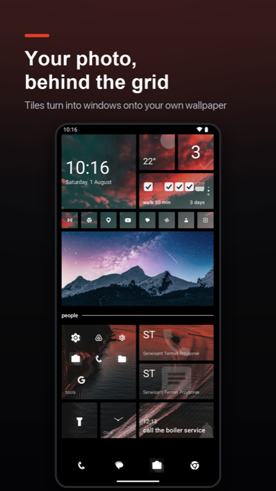
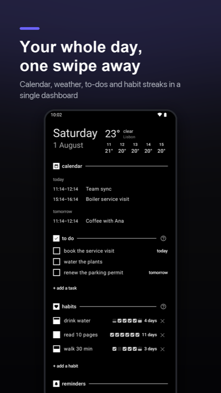
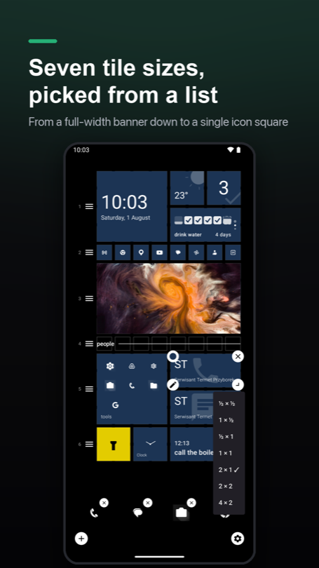
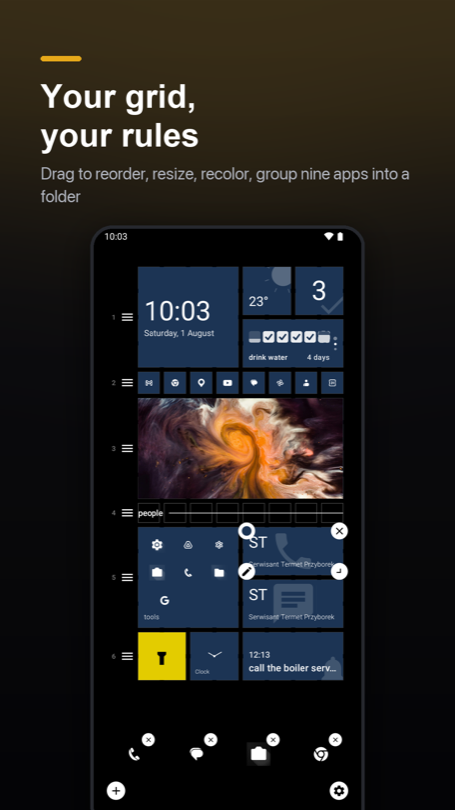
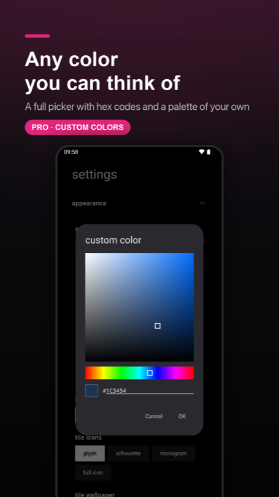
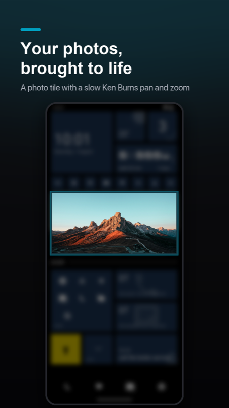
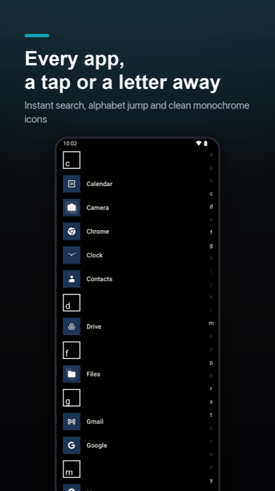

Your home screen, squared away.
sqTile is a local-first Android launcher built around square tiles. Your calendar, reminders, habits and unread badges live on one calm grid — and none of it goes to a server of mine.








A launcher that does the small things properly.
Most launchers are either a wall of icons or a subscription with a dashboard. sqTile sits in between: a tidy grid that actually tells you something, and nothing that phones home.
Square tiles, real information
Seven tile sizes, from a single icon square to a full-width banner, each one recolourable. Apps, folders, contacts, weather, your next event, a habit streak — laid out on one predictable grid.
Badges that come from your notifications
Grant notification access and tiles show unread counts. Notification content is read for the badge and never stored or transmitted.
To-dos, reminders and habits built in
Capture something from the home screen and it schedules an on-device reminder. No second app, no sync service, no sign-up.
Local-first by architecture
There is no server of mine to send your data to. Layout, tasks and settings live in the app's private storage; back them up to a file you control.
Every dependency has to earn its place
Libraries get picked for what they cost in download size and RAM, not for convenience. A launcher runs all day — it has no business being the heaviest thing on your phone.
Measured, not guessed
Any release that touches the startup path gets benchmarked on a real phone before it ships. If a number moves the wrong way, the next thing I work on is finding what slowed it down — not the next feature.
Built for people who want their phone to be quiet.
sqTile is not trying to be every launcher for everyone. It's aimed at a specific kind of user — and everything on the backlog is judged against that.
The intentional phone user
Wants a home screen that shows what matters today, not 40 icons and a news feed.
The privacy-minded
Reads permission lists. Prefers on-device processing and no account over convenience.
Tinkerers & customisers
Enjoys arranging a grid until it's exactly right, and wants export/import to keep it.
Light task-manager users
Needs to-dos, reminders and habits close at hand — without adopting a whole system.
Just landed, and what's next.
Shipped in small updates rather than big releases — four of them in the last two weeks alone, written up in the release notes. Keep the app updated, or subscribe and I'll tell you when each of these lands.
A home screen that's already set up
A fresh install now opens on a working grid — clock, weather, to-dos, dock — instead of an empty screen and an instruction.
Press and hold for a quick menu
Hold an empty spot and four flat tiles unfold under your finger: add a tile, edit, wallpaper, settings.
Readable under any accent
Buttons, pickers and text fields keep their contrast even when the accent is the same colour as the background.
Folders and quick contacts
Nine apps in one tile, and a tile that calls or messages one person straight from the grid.
Custom colour picker
Add up to ten colours of your own on top of the built-in accents — the grid is yours to match.
Icon packs
Point sqTile at an icon pack you already own and let it feed the tiles, alongside the built-in glyph styles.
A full weather screen
Tapping the weather tile should open a proper forecast, not send you to the dashboard.
Widgets on the dashboard
Room for the Android widgets you can't replace with a tile — without letting them loose on the grid.